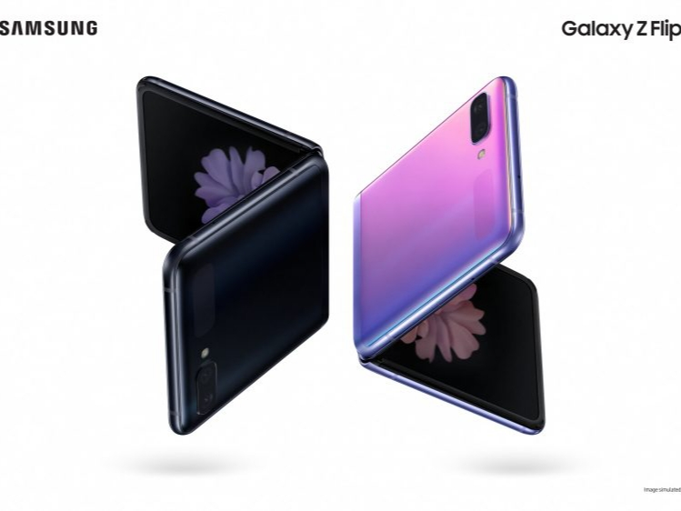

TEWODROS ADMASSU |
|||
BLOG |
|||
What to do to protect ourselves from CoronavirusThere is a lack of information when talking about how to protect ourselves from Coronavirus and in times like this it is important to keep updated on the latest information. One of the most important things to do is washing hands with soap frequently. Another thing that we must keep in mind is that we should avoid touching the mouth, nose, and eyes at all times. Last updated on MARCH 14, 2020 - 11:45 AM |
|||
More foldable phones in 2020The advancement of manufacturing foldable OLED screens is making it more easier to make foldable phones. In 2020, we are seeing more and more fodable devices. The latest addition to this is the Samsung Galaxy Z Flip. Samsung has learned from it's past foldable mistakes and made a better device. Last updated on March 01, 2020 - 12:00 PM |
 | ||
Android 11 preview 1 has been releasedGoogle has unveiled the new Android 11 developers preview. This is going to be very useful for developers get used to the new API and development process. This version is also said to have various features like native screen recording and dark mode, and major security updates. Last updated on FEBRUARY 20, 2020 - 9:13 PM |
|||
|
© Tewodros Admassu, 2020 |
|||